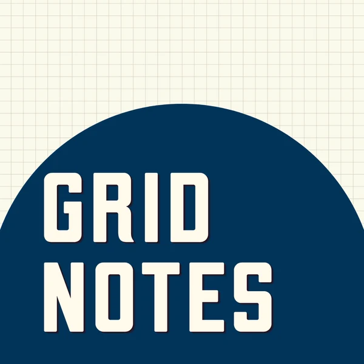
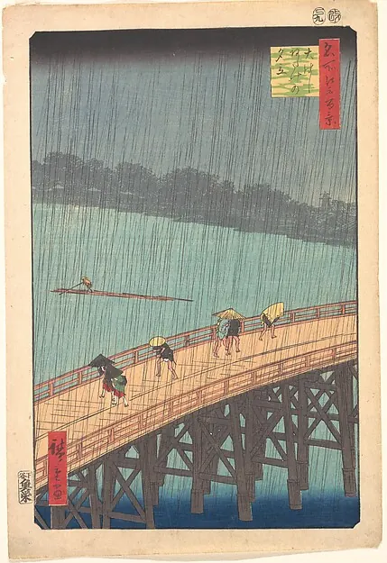
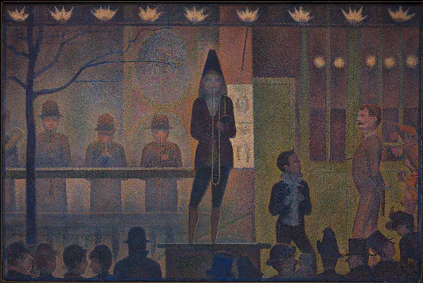
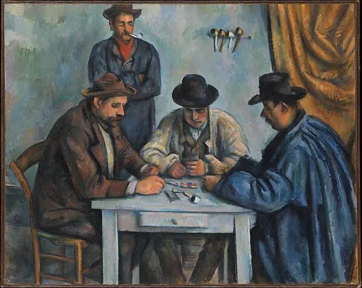
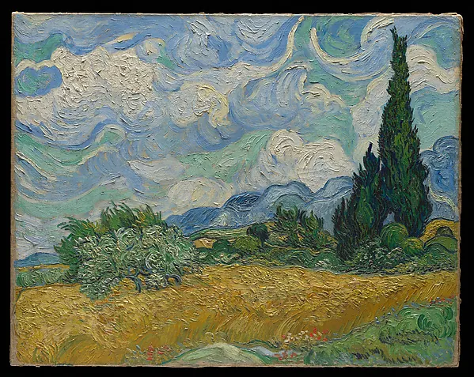
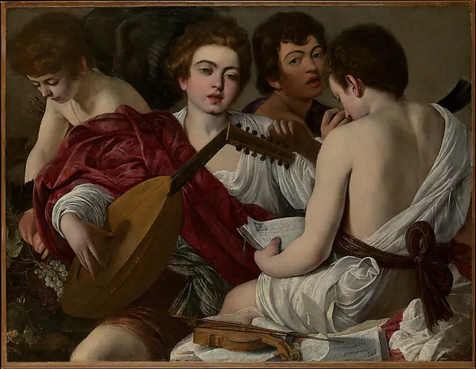

Better note taking app for iPad
Grid Notes
Grid paper with real 7 mm squares on iPadOS. Circle something to turn it into a sticker, scribble to erase, no bobbly scrolling, and very beautiful.
Now making
A weekly recommendation board for essays, movies, albums and novels. No feeds, no influencers, no AI slop.
How it works →
Better note taking app for iPad
Grid paper with real 7 mm squares on iPadOS. Circle something to turn it into a sticker, scribble to erase, no bobbly scrolling, and very beautiful.
Editor's letter
I'm a master's student at Georgetown. I created azine, a weekly recommendation board for essays, movies, albums and novels. It's for people who are mad at ads/influencers/AI slop.
I also created Grid Notes, a true to size grid paper note app. I address every issue I have with other note apps. Namely, creating mini notes within notes and no obnoxious scrolling.

Point processes
For a class project, we were interested in analyzing the clustering behavior of crime in major citites. We specifcally used the poission point process and Hawkes process to determine how crime is clustered in NYC, Vancouver, and Chicago. We also determined what to what degree a polynominal is best suited for clustering crime.

Coding theory
Encoding and decoding messages with Reed-Muller error-correcting codes, and watching how well they hold up as the channel gets noisier.

Sentiment analysis
89 days of posts from five political subreddits, read for what people said about the 2024 Democratic ticket: word clouds, sentiment over time and topic modeling.

An R package
Color palettes that stay readable for people with red-green colorblindness, because a chart should work for everyone who looks at it.

Data mining
Mining a dataset of pop songs and their streams: cleaning it up, an SVM model, word clouds and a Shiny app.